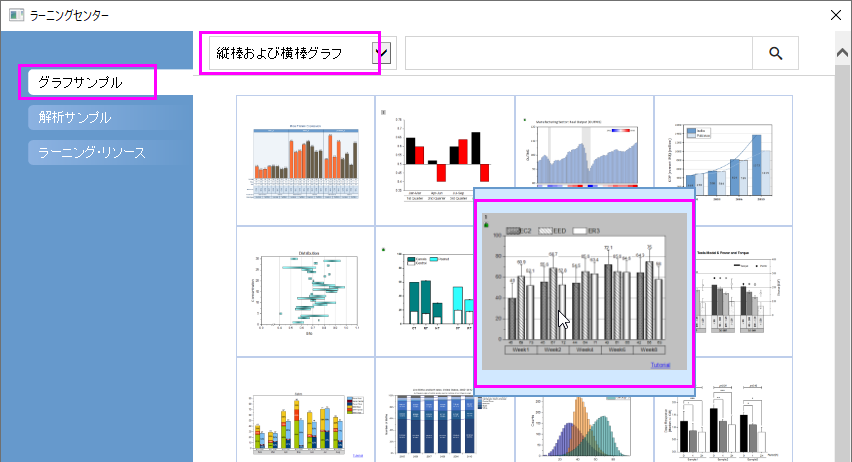
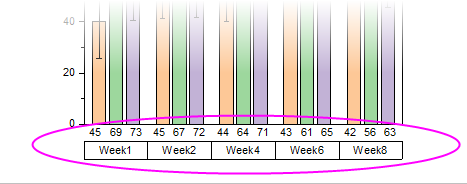

エラーバーとデータラベル付きグループ棒グラフ
GroupedColumn-ErrBar-Label
サマリー
Originでは、インデックスデータによりグループ化された棒グラフを作成できます。複数のグループレベルを設定できます。グループ化する情報は目盛ラベルの表やXまたはY軸に表示できます。

学習する項目
このチュートリアルでは、以下の項目について説明します。
- インデックスデータによるエラーバー付きグループ化棒グラフを作図する
- 目盛ラベル、色、間隔、エラーバーやデータラベルを編集する
- グルーピング情報を表示するために凡例を更新する
ステップ
- メニューからヘルプ：ラーニングセンターと選択する、もしくはF11キーを押して、ラーニングセンターを開きます。左パネルでグラフサンプルを選択し、「縦棒及び横棒グラフ」カテゴリーを選びます。このグラフを探し、ダブルクリックしてサンプルを開きます。

- それから、ワークシート「Weekly Data」のデータを元に、グループ化した棒グラフを作成します。列D(Y2)と列E(yErr)を選択して作図>カテゴリカル：グループ縦棒グラフ
- インデックスデータを選択します。
- plot_gindexedダイアログで、グループリストボックスの ボタンをクリックして、列B、C、F
をこのままの順番で入力し、グループリストとして追加します。OKボタンをクリックします。
エラーバー付きのグループ化縦棒グラフが作成されます。3つの行に分かれている目盛ラベルにグルーピングに使用した情報が組み込まれています。このワークシートは、グラフを作成する際に使用した情報がまとめられています。
- 最初の軸ラベル行を非表示にするには、1行目の軸ラベル（EC2など）上でダブルクリックします。軸ダイアログが開き、左パネルで下3アイコンが選択されます。表示のチェックをはずしてから適用をクリックします。
- 下2の目盛ラベルの表示を編集します。左側パネルで下2アイコンをクリックします。「表」タブで自動のボックスのチェックを外し、境界線の全てのチェックボックスを外してOKボタンをクリックします。
これでレイアウトの異なる2つの軸ラベルが表示されます。

詳細な編集
これからの手順で更にグラフを編集し、サマリーで紹介したようなグラフの表示に変更します。
- グラフの左Y軸をクリックし、ミニツールバーを表示させます。グリッド線を表示ボタン
 をクリックし、ドロップダウンリストから主を選択して主グリッド線を表示させます。
をクリックし、ドロップダウンリストから主を選択して主グリッド線を表示させます。
- グラフのエラーバーをどれかクリックし、ミニツールバーを表示させます。方向ボタン
 をクリックし、リストからプラスYエラーを選択して正方向のYエラーを表示させます。
をクリックし、リストからプラスYエラーを選択して正方向のYエラーを表示させます。
- グラフの縦棒をどれかクリックし、ミニツールバーを表示させます。データラベルを表示ボタン
 をクリックし、エラーバーの上にラベルを表示させます。
をクリックし、エラーバーの上にラベルを表示させます。

ラベルをどれかクリックし、ミニツールバーを表示させます。フォントサイズを「16」に設定します。
 |
ラベル値の表示方法を設定するには、ラベルをダブルクリックして作図の詳細ダイアログのラベルタブを開き、数値表示フォーマットドロップダウンリストで設定します。
たとえば、各ラベルに小数点以下1桁を表示するには、「.1」と入力してから適用をクリックします。詳細は、カスタム数値フォーマットを参照してください。
|
- 縦棒をダブルクリックして作図の詳細ダイアログを開きます。各週の間隔を調整するには、間隔タブを開いてサブセット間の間隔(%)を15にします（ヒント：テキストボックスに入力できます）。
- 列Cのデータを使用して、棒グラフの塗りつぶしパターンと色のグラデーションを設定しましょう。作図の詳細ダイアログのパターンタブで次のように設定します。
塗りつぶし色を白にするには、ドロップダウンをクリックして単一色タブを開き、白色セルをクリックします。同様に、塗りつぶしパターンについてもドロップダウンをクリックしてポイントでタブを開き、列の値を使うボタンを押してリストからCol(C)を選択します。
階調色の方向を水平中心外向きに設定します。
- パターンリストをカスタマイズするには、再度パターンドロップダウンを開いてパターンリストの右側にある鉛筆アイコンをクリックします。これにより、推移リストエディタが開き、カスタムパターンリストを作成できます。番号付きのボタンをパターンギャラリーの左側にドラッグして、図のようにカスタムリストの上位3つのエントリを並べ替えます。
- グラフの背景色を変更するには、作図の詳細ダイアログの左側パネルでGraphアイコンを選択します。表示指定タブの色を明るい灰色にします。

- レイヤの背景色を白にするには、引き続き作図の詳細ダイアログの左側パネルでLayer1を選択します。背景タブを開き、色を白にします。OKをクリックして作図の詳細ダイアログを閉じます。
- 凡例内にパターンの情報を表示するために、凡例上で右クリックし、凡例：カテゴリー値を選択します。表示されるダイアログはそのままOKをクリックします。
- 凡例を水平に配置するには、凡例を選択し、Ctrlキーを押しながら凡例エントリが水平に配置されるまで凡例の両側に沿って緑色のハンドルの1つをドラッグします。
再び凡例を右クリックし、凡例：垂直に揃える/水平に揃えるを選択して、凡例を再整列します。
- 凡例を適当な場所に移動し、Y 軸タイトルを選択してDeleteキーを押して削除します。

|
完成したグラフを中央に配置して余白を調整するには、グラフをクリックしてアクティブにしてから、グラフ操作：ページにレイヤを合わせるを選択します。境界幅を入力し、レイヤアスペクト比を維持するかどうかをチェックしてOKをクリックします。
|